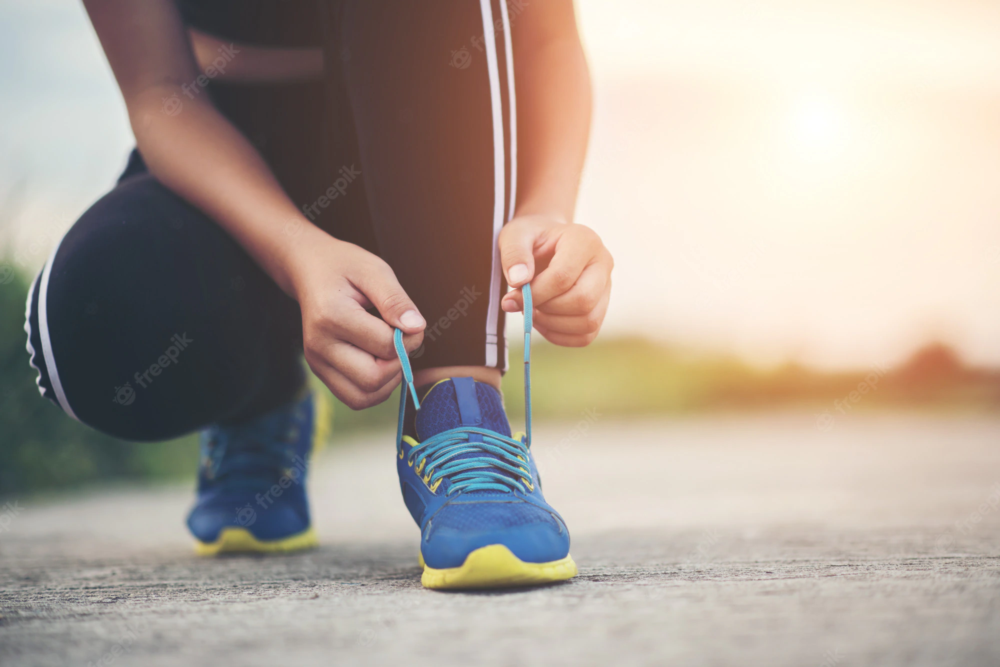

Patience
Patience in this domain is in the most important key
to help you to do exercises effectively and respect
the Guidelines and be patient to all costs like time
Commitment
If you want to win, please love sports with all of your heart
and you must be ready to complete each step in the guide line.
We know the key is the finish what you beginned and succeed.

Time
Please take your time and do the sports either having stress or not
but depending on your free time. And we can advise you to use your
free time in the right way by doing either sports or physical exercises.
Balance diet
This is also the one of the most strong requirements in this domain.
After flexing and taking a rest for a moment after sports,
we must take the balance diet to regain our lost energy during sport.

Carl Johnson
Yolla guys, you can't beleive this. I had the weight of 97 kilograms but now, from when I started following the guidelines on florics, I decrease my weight to 80 kilograms! From then I feel healthy!
Kate Aurore
Ohhh my gosh, you can't feel how this site is exciting! Guys, this is real. You can decrease weight and be healthy on this site, as I am right now!
Millie Vanilla
I think this is your only way to be healthy, strong and prevent from diseases. Few weeks ago when is started using florics guidelines, I have increased my health status!
Miller Danilla
Woooow, its incredible! this very exciting. Florics is the answer for our stress and tiredness. Every time I feel tired I follow the guidelines from florics and do some physical exercises and get a balanced diet which made me healthy.
Marcus finley
For the short time I used Frolics, guys, I can advice you to be patient and follow guidelines. This will be helpful guys! It is real, so try to reduce your weight and stresses from work. Also kids are allowed to use Florics.